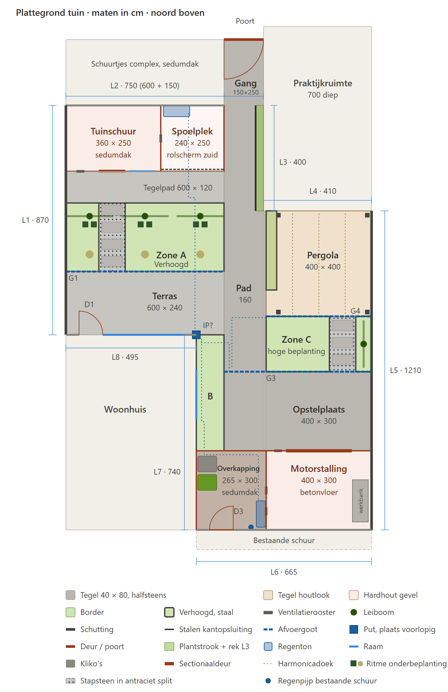

Ontwerpdossier tuinontwerp
Uitgangspunten
De tuin wordt volledig gerenoveerd tot een strakke, moderne en onderhoudsarme tuin zonder gras, met een tuinschuur met spoelplek voor duikspullen, een overdekte motorstalling en twee terrassen. De tuin is 133,7 m² groot, ligt op kleigrond en heeft een Z-vorm; noord is de kant van de galerij van het appartementencomplex. Het interactieve 3D-model toont het ontwerp op ware grootte, met zonnestand, avondverlichting, zonuren- en inkijkkaart, groei in de tijd, rondlopen op ooghoogte en klikbare onderdelen. De interactieve plattegrond toont alle lagen op schaal, met een meetfunctie. Het legplan 40 × 80 toont elke tegel, de zaagmaten en de bestellijst.
Alle maten in dit dossier zijn in cm. Posities zijn gemeten vanaf L1 (westgrens, x) en vanaf L2 (noordgrens, y).
| Lijn | Ligging | Lengte | Uitvoering | Hoogte |
|---|
| L1 | West, grens met westburen | 870 | Nieuwe schutting hardhout-beton (zie Materialen) | 200 |
| L2 | Noord, schuurtjes appartementencomplex | 750 (600 muur + 150 doorgang) | Schuurtjes complex: lichte baksteen, sedumdak; doorgang 150 naar gang met poort | 300 |
| L3 | Westgevel praktijkruimte chiropractor | 400 | Oud metselwerk, aluminium dakrand, begroeid plat dak; niet ons eigendom | 275 |
| L4 | Zuidgevel praktijkruimte chiropractor | 410 | Oud metselwerk, aluminium dakrand, begroeid plat dak; niet ons eigendom | 275 |
| L5 | Oost, grens met oostburen | 1210 | Nieuwe schutting, als L1 | 200 |
| L6 | Zuid, bestaande schuur | 665 | Bestaande schuur: rood metselwerk, wit/crème boeiboord 35 cm, schuurdeur D3 | 250 |
| L7 | Oostgevel woonhuis | 740 | Metselwerk met woonkamerraam 190 × 120 (exclusief vensterbank), op 130 cm van de hoek met L8 en 85 cm boven de tegels | n.v.t. |
| L8 | Noordgevel woonhuis | 495 | Borstwering in metselwerk, breed raam met bovenlichten, deur D1 donkerblauw met zijlicht; band van grindbeton en raamband op de verdieping; zadeldak | n.v.t. |
Omgeving. Achter L2 loopt een gang van 150 × 250 cm op eigen perceel naar een poort; dit is de enige toegang voor de motoren. De kliko's gaan niet door deze poort, maar via de bestaande schuur (L6) en schuurdeur D3. De praktijkruimte is in totaal 700 cm diep en heeft geen ramen naar de tuin. Het complex heeft 3 bouwlagen, met een galerij op de 1e en 2e verdieping, naar schatting op 3,0 en 6,0 m hoogte en 5 m achter L2. Het begint in lijn met de westgevel van de praktijkruimte en krijgt lichte baksteen en zonnepanelen op het dak. Aan de westzijde staat een rond trappenhuis, aan de oostzijde, achter de spoelplek, de liftschacht; de galerijen lopen daartussen, met privétuintjes tussen galerij en schuurtjes. De schuurtjes op L2 (3 m hoog) krijgen een sedumdak.
Ondergrond. De grond bestaat grotendeels uit klei, ligt niet waterpas en is een aantal keer opgehoogd. De huidige tegels liggen ongeveer op gelijke hoogte met de ontluchtingsroosters van de kruipruimte, of zelfs erboven, en de tuin watert slecht af. Daarom wordt eerst een deel van de grond afgegraven en komt er een aangetrild en geëgaliseerd zandbed, voordat de opbouw begint (zie Grondwerk bij de werkomschrijving).
Plattegrond
De plattegrond toont de complete indeling op schaal, met de maatlijnen L1 tot L8, de afvoergoten G1, G3 en G4 en een voorlopige plek voor de inspectieput (IP).

Ontwerp per onderdeel
De tuin is van noord naar zuid opgebouwd: tuinschuur en spoelplek tegen L2, leibomen als scherm tegen inkijk vanaf de galerij, een terras bij de woonkamer met de leibomen als blikvanger, een pergola-terras in de warmste hoek en een bijgebouw met motorstalling langs L6. Een pad verbindt de poort met de motorstalling; een aparte looproute loopt van D1 naar de schuur. Alle bestrating is dezelfde middengrijze tegel; alleen het pergola-terras heeft bewust een eigen houtlook.
| Onderdeel | Plaats x / y | Maat | Uitvoering |
|---|
| Tuinschuur, dicht | 0-360 / 0-250 | 360 × 250 × 280 | Opslag gereedschap en duikspullen. Deur 100 breed op 125 van L1, raam ca. 100 × 100 rechts van de deur; ventilatieroosters laag in de zuidgevel en hoog in de oostwand. Vloer: Redsun Cerasun Siena Grigio 40 × 80 (SB-2752), halfsteensverband, noord-zuid |
| Spoel- en droogplek, open | 360-600 / 0-250 | 240 × 250 | Open naar zuid en oost. Spoelbak, dompelbak, vloerputje, droogrek, platte regenton achterin; rolscherm over de open zuidzijde tegen zon en slagregen. Vloer: Redsun Cerasun Siena Grigio 40 × 80 (SB-2752), halfsteensverband, noord-zuid, op afschot naar het vloerputje |
| Tegelpad voor de schuur | 0-600 / 250-370 | 600 × 120 | Redsun Cerasun Siena Grigio 40 × 80 (SB-2752), halfsteensverband, noord-zuid; sluit aan op het pad |
| Zone A, west | 0-125 / 370-630 | 125 × 260 | Verhoogd 35 cm, stalen rand, ook los langs L1 (niet tegen de schutting). Leiboom op x = 90 |
| Stapstenenstrook | 125-225 / 370-630 | 100 × 260 | Gelijkvloers tussen de verhoogde delen, antraciet split in grindmatten, 4 stapstenen van hele tegels Redsun Cerasun Siena Grigio 40 × 80 (SB-2752), dwars, van terras naar tegelpad, in lijn met de schuurdeur |
| Zone A, oost | 225-600 / 370-630 | 375 × 260 | Verhoogd 35 cm, stalen rand. Leibomen op x = 300 en 510 |
| Beplanting zone A | 0-600 / 370-630 | 600 × 260 | Lage, ritmische onderbeplanting tot ca. 60 cm: onder elke leiboom twee blokvormen en een grasgroep, daartussen lage vaste planten. De leibomen zijn de blikvanger. Grond verbeterd tegen klei |
| Terras langs L8 | 0-600 / 630-870 | 600 × 240 | Redsun Cerasun Siena Grigio 40 × 80 (SB-2752), halfsteensverband, noord-zuid; uitstap bij D1 |
| Gang en pad | 600-750 / −250-400; 600-760 / 400-1310 | Gang 150 breed, 120 langs L3, 160 vanaf L4 | Redsun Cerasun Siena Grigio 40 × 80 (SB-2752), halfsteensverband, noord-zuid; in de gang een strook van 30. Poort 150 breed, 200 hoog, draait naar binnen |
| Plantstrook langs L3 | 720-750 / 0-400 | 30 × 400 | Vrijstaand rek 200 hoog, 10 cm voor de muur, groenblijvende klimplant |
| Pergola-terras | 760-1160 / 400-800 | 400 × 400 | Keramiek op beton houtlook 120 × 30 × 4 (SB-24770), 1/3-verband. Vrijstaande aluminium pergola 400 × 400, 260 hoog, 3 dwarsbalken, harmonicadoek. Plantenbak 40 × 300 met hoge siergrassen langs de westkant, ingang 100 breed aan de zuidkant |
| Zone C | 760-1160 / 800-1010 | 400 × 210 | Verhoogde border 240 × 210 met beplanting van 120-150 cm hoog, doorsteek 100 breed op x = 1000-1100 met 3 stapstenen van hele tegels SB-2752 in antraciet split (identiek aan de stapstenenstrook), strook 60 breed met leiboom tegen L5 |
| Opstelplaats | 760-1160 / 1010-1310 | 400 × 300 | Redsun Cerasun Siena Grigio 40 × 80 (SB-2752), halfsteensverband, noord-zuid; ruimte om te draaien voor de motorstalling |
| Zone B | 495-600 / 870-1310 | 105 × 440 | Verhoogd, beplanting tot ca. 50 cm zodat de onderkant van het raam in L7 (85 cm) vrij blijft |
| Overkapping, open | 495-760 / 1310-1610 | 265 × 300 × 250 | Doorloop naar schuurdeur D3 (donkerblauw, glas boven, draait de overkapping in), 2 kliko's (grijs, groen) tegen L7 buiten de draaicirkel van D3, regenton in de zuidoosthoek tegen de stallingmuur, gevuld door de bestaande regenpijp van de schuur (verlegd van 320 naar ca. 210 cm van de westhoek van L6). Vloer: Redsun Cerasun Siena Grigio 40 × 80 (SB-2752), halfsteensverband, noord-zuid; strook van 25 langs gevel L7 |
| Motorstalling, dicht | 760-1160 / 1310-1610 | 400 × 300 × 250 | Betonvloer met coating, elektrische sectionaaldeur 250 × 200 met lage geleiding, midden in de noordgevel; ruimte voor 2 motoren met een werkbank 60 × 160 tegen de oostwand; ventilatieroosters laag in de noordgevel, hoog en laag in de westwand (dwarsventilatie) |
Leibomen: stam 220 cm, raam 180 × 150 cm, groenblijvend (bijvoorbeeld Prunus lusitanica 'Angustifolia'). Het bijgebouw langs L6 sluit op gelijke hoogte aan op de bestaande schuur: 250 cm hoog, met een wit/crème boeiboord van 35 cm dat in één lijn doorloopt. Beide bijgebouwen hebben een plat dak met sedum en afschot naar de regenpijpen: de tuinschuur naar achteren, het bijgebouw naar de zuidoosthoek.
Materialen
Alle materialen zijn gekozen op een strak beeld zonder schilderwerk: één middengrijze keramische tegel overal (houtlook onder de pergola), hardhout dat vanzelf vergrijst, en antraciet staal en aluminium voor de details.
| Onderdeel | Materiaal | Formaat en kleur | Aandachtspunt |
|---|
| Terrassen, tegelpad, vloeren tuinschuur en spoelplek, stapstenen | Redsun Cerasun Siena Grigio, keramiek op beton, 4 cm (Snoei tuinmaterialen SB-2752) | 40 × 80, middengrijs, halfsteensverband, op één voegraster vanaf L1. Richting: alles noord-zuid, lange kant in de looprichting (zie het legplan 40 × 80) | Afschot 1-1,5 % weg van het huis |
| Gang, pad, opstelplaats, overkapping | Zelfde tegel (SB-2752); geschiktheid voor licht verkeer nagaan bij de leverancier | Zelfde tegel, formaat en verband, altijd noord-zuid (lange kant in de looprichting) | Fundering 25-30 cm, 5 % reservetegels, standaardplaatje per motor |
| Pergola-terras | Keramiek op beton houtlook, 4 cm (Snoei tuinmaterialen SB-24770) | 120 × 30 × 4, 1/3-verband, noord-zuid, eigen raster van 30 cm vanaf L5 | geen |
| Opsluiting tegels bij borders | Verzonken stalen kantopsluiting, betonrug onder de laatste tegelrij | Antraciet, gelijk met de tegel (3-5 mm zichtbaar) | Langs L3 zwaarder (5 mm); verhoogde borders zijn zelf de opsluiting |
| Schuttingen L1, L5 en poort | Hardhout-beton: antraciet betonpalen en antraciet betonband 35 cm, 23 horizontale hardhouten planken, beide zijden zichtzijde | 200 hoog; hout vergrijst in 1 à 2 jaar, net als de gevels | Gekozen. Voorbeeld: Woodvision designscherm 1064007 of 23-planks hardhout hout-beton tuinscherm van Alex Systeembouw. Poort met stalen frame en hardhout |
| Gevels schuur en bijgebouw | Hardhout, verticale delen of zweeds rabat | Vergrijst in 1-2 jaar | Kozijnen, deuren en dakrand antraciet |
| Daken | Wortelwerende EPDM (FLL) met sedummatten, grindstrook 30 cm | Hoogte totaal: tuinschuur ca. 280, bijgebouw 250 | Constructie berekend op 150 kg/m² |
| Randen verhoogde borders | Staal | Antraciet, 35 hoog (plantenbak 45) | geen |
| Grind stapstenenstroken | Antraciet split 8-16 mm in grindmatten | Drainerende fundering ca. 15 cm, licht afschot naar de goten | Zelfde uitvoering bij terras en zone C |
| Pergola | Aluminium, gepoedercoat | Antraciet, 400 × 400 × 260 | Vrijstaand, voorbereid op harmonicadoek |
| Vloer motorstalling | Beton met coating | Grijs | Bestand tegen olie |
| Afvoergoten | Sleufgoot met rooster | G1 en G4 standaard, G3 berijdbaar, klasse B125 | Bladvangers, smalle sleuven tegen grind |
Ontwerpraster. De tuin is afgestemd op tegels van 40 breed: de lange voegen liggen op een veelvoud van 40 cm vanaf L1. Op dat raster liggen de tussenwand tuinschuur (360), de westrand van het pad (600), de plantstrook L3 (720), de westmuur van de motorstalling en de westrand van pergola-terras en zone C (760) en L5 (1160). Het pad is vanaf L4 160 breed: 4 hele tegels. Alleen in de gang (150 breed, vast) komt een strook van 30 en langs gevel L7 (495, vast) een strook van 25. De stapstenen zijn hele tegels 40 × 80, dwars gelegd, met 10 cm grind aan weerszijden. De houtlook op het pergola-terras heeft een eigen raster van 30 cm vanaf L5; alleen bij de ingang blijft een strook van 10. Het legplan toont waar.
Water, afvoer, elektra en verlichting
Alle leidingen en kabels lopen zoveel mogelijk in dezelfde sleuven als het riool, met een extra lege buis, zodat er maar één keer gegraven wordt vóór de bestrating. De meterkast wordt aangenomen in de westwand van de bestaande schuur (L6). Die schuur is ongeveer 250 cm breed en grenst aan de overkapping, zodat de kabels naar het bijgebouw kort blijven.
Water en afvoer
- Aanvoer: alleen koud water, afgetakt vóór de bestaande buitenkraan aan de oostkant van L8. De aftapkraan van die buitenkraan zit in de kruipruimte, onder het kruipluik bij de voordeur aan de voorzijde (zuidzijde). Takt de tuinleiding na deze aftapkraan af, dan wordt ze in de winter mee afgetapt.
- Spoelplek (W1): spoelbak ca. 60 × 45 met kraan en handdouche tegen de achterwand, dompelbak 100-150 liter tegen de westwand, vloerputje in het midden.
- Vuilwater: spoelbak, dompelbak en vloerputje voeren af naar het vuilwaterriool (zout spoelwater).
- Regenwater: goten G1 (y = 630, over 600 breed), G3 (y = 1010, berijdbaar) en G4 (zuidrand pergola-terras), de regenpijpen en de overlopen van beide regentonnen voeren af naar een inspectieput. De plaats van de put (of putten) moet nog worden bepaald; de tekeningen tonen een voorlopige plek bij de hoek L7/L8. G2, een drempelgoot voor D1, is vervallen: de tuindeur heeft een drempel.
Elektra
- Nieuwe groep of groepen vanuit de meterkast in de bestaande schuur, met aardlekbeveiliging. Het aantal groepen en de indeling (bijvoorbeeld verlichting, stopcontacten en het laadpunt) beoordeelt en bepaalt de installateur volgens de geldende richtlijnen (NEN 1010). Grondkabel naar verdeelpunt K1 (bijgebouw, direct naast de schuur) en via het pad naar K2 (tuinschuur).
- Voorbereiding laadpunt: extra kabel 5 × 6 mm² (3-fase) in eigen buis van de meterkast naar de motorstalling.
- Stopcontacten: tuinschuur 2 dubbel, spoelplek 1 spatwaterdicht en hoog, pergola 1 spatwaterdicht aan een staander, overkapping 1 spatwaterdicht, motorstalling 2 dubbel.
- Aansluiting elektrische sectionaaldeur; plafondlampen in schuur, spoelplek, overkapping en motorstalling.
Verlichting
Warm wit (2700 K), naar beneden gericht om lichthinder voor buren en galerij te voorkomen, bediend met een programmeerbaar slim systeem.
| Code | Plek | Licht | Bediening |
|---|
| V1 | Poort | Wandlamp op poortpaal | Bewegingsmelder |
| V2 | Langs het pad | 7 inbouwspots in de stalen borderranden, waarvan 2 bij de stapstenen | Schema: schemer tot 23:00 |
| V3 | Tuinschuur | Wandlamp boven de deur, plafondlampen schuur en spoelplek | Bewegingsmelder en schakelaar |
| V4 | Opstelplaats | Wandlamp naast de sectionaaldeur | Bewegingsmelder |
| V5 | Terras L8 | 2 wandlampen naast D1 | App of schakelaar |
| V6 | Pergola | 6 dimbare spots in de dwarsbalken | App of dimmer |
| V7 | Leibomen | 4 grondspots die het scherm aanlichten | Schema |
Werkomschrijving per vakman
Drie partijen voeren het werk uit. Het grondwerk (afgraven en zandbed) moet klaar zijn voordat de opbouw begint, en het leidingwerk voordat de bestrating erin gaat.
Volgorde van uitvoering
- Oude tuin verwijderen: bestrating, beplanting, puin en eerdere ophooglagen (stratenmaker).
- Peil vastleggen ten opzichte van de ontluchtingsroosters en de drempel van D1, en de grond afgraven (stratenmaker).
- Riool, waterleiding, kabels en lege buizen in gezamenlijke sleuven (installateur).
- Zandbed storten, in lagen aantrillen en egaliseren op peil en afschot (stratenmaker). Pas daarna begint de opbouw.
- Funderingen en bouw van tuinschuur en bijgebouw (aannemer).
- Schuttingen L1 en L5 en poort (aannemer).
- Fundering, bestrating en goten (stratenmaker).
- Pergola, vrijstaand rek L3, stalen borderranden.
- Borders vullen, leibomen en beplanting (hovenier).
- Lampen, stopcontacten en slim systeem afmonteren (installateur).
Grondwerk, vóór de opbouw (stratenmaker)
- Peil vastleggen vóór het afgraven: de nieuwe bestrating komt ruim onder de onderkant van de ontluchtingsroosters van de kruipruimte (minimaal ca. 5 cm, liever meer) en onder de drempel van D1, zodat de kruipruimte blijft ventileren en er geen water tegen de gevel blijft staan.
- Oude bestrating, puin en eerdere ophooglagen verwijderen en de grond afgraven tot onder de nieuwe opbouw (tegel, legbed en fundering). De diepte bepaalt de stratenmaker na een proefgat; onder pad, gang, opstelplaats en bijgebouwen dieper dan onder de terrassen.
- Afgegraven klei en puin afvoeren; klei niet terugbrengen onder verharding of bijgebouwen.
- Na het leggen van riool, waterleiding en kabels (installateur) een zandbed van schoon, goed doorlatend ophoogzand storten, in lagen van ca. 20 cm. Elke laag aantrillen met een trilplaat en egaliseren.
- De bovenkant van het zandbed vlak en op afschot afwerken: 1-1,5 % weg van het huis, naar de goten. Zo watert de tuin af via het zandbed en de goten in plaats van via de klei.
- Onder de borders blijft de grond liggen; daar de klei losmaken en verbeteren (zie stratenmaker en hovenier).
- Pas als het zandbed vlak, op peil en goed verdicht is, begint de opbouw: funderingen, schuttingen en bestrating.
Aannemer
- Tuinschuur met spoelplek 600 × 250 (hoogte ca. 280 inclusief sedum) en bijgebouw 665 × 300 (hoogte 250, gelijk met de bestaande schuur), hardhouten gevels met antraciet details.
- Ventilatieroosters met insectengaas: tuinschuur laag in de zuidgevel en hoog in de oostwand; motorstalling laag in de noordgevel, hoog en laag in de westwand. Rolscherm (screendoek) over de open zuidzijde van de spoelplek, 240 breed.
- Dakconstructie berekend op 150 kg/m²; ligger van 265 boven de overkapping, tussen een muurplaat of console aan gevel L7 en de stallingmuur.
- Regenpijp van de bestaande schuur verleggen van 320 naar ca. 210 cm van de westhoek (L6): nieuwe uitloop in de dakrand, oude uitloop dichtzetten, aansluiten op de regenton en de regenwaterafvoer.
- Wortelwerende EPDM, sedummatten, grindstrook 30 cm, grindvanger op elke afvoer, afschot minimaal 1,5-2 %; aansluiting op het boeiboord van de bestaande schuur (L6) waterdicht detailleren.
- Elektrische sectionaaldeur 250 × 200 (lage geleiding), betonvloer motorstalling met coating.
- Schuttingen L1 en L5 (200 hoog) in hardhout-beton: antraciet betonpalen, antraciet betonband 35 cm en 23 horizontale hardhouten planken, beide zijden zichtzijde. Voorbeeld: Woodvision designscherm 1064007 of het 23-planks hardhout hout-beton tuinscherm van Alex Systeembouw. Poort 150 × 200 met stalen frame en hardhout.
Installateur
- Bepalen: gemengd of gescheiden stelsel in de straat, eis van de gemeente over afkoppelen, plaats van de inspectieput of -putten, afschot vanaf de spoelplek naar de put, ontstoppingsstukken bij bochten en spoelplek.
- Regenwater: goten G1, G3 en G4, regenpijpen en overlopen regentonnen naar de inspectieput (plaats nog te bepalen). Geen drempelgoot G2.
- Vuilwater: spoelbak, dompelbak en vloerputje spoelplek.
- Waterleiding koud naar W1, afgetakt vóór de bestaande buitenkraan en na de bestaande aftapkraan in de kruipruimte (kruipluik bij de voordeur, zuidzijde), zodat de tuinleiding in de winter mee wordt afgetapt; leiding op afschot naar dat aftappunt.
- Elektra: aantal nieuwe groepen en hun indeling beoordelen en bepalen volgens de geldende richtlijnen (NEN 1010), in de meterkast in de westwand van de bestaande schuur; kabeldoorvoer naar de overkapping, K1, K2, stopcontacten, aansluiting deurmotor, voorbereiding laadpunt; capaciteit meterkast controleren.
- Verlichting V1 tot V7 met programmeerbaar slim systeem.
Stratenmaker en hovenier
- Fundering op het aangetrilde zandbed: 25-30 cm menggranulaat onder pad, gang en opstelplaats; lichter onder terrassen. Peil van het terras afstemmen op de bestaande drempel van D1: terras onder de drempel, afschot van het huis af naar G1.
- Bestrating volgens de materialenlijst en het legplan 40 × 80 (bestellen bij Snoei tuinmaterialen: 284 tegels Redsun Cerasun Siena Grigio 40 × 80 × 4, SB-2752, en 49 tegels houtlook 120 × 30 × 4, SB-24770; alles uit één productiepartij), afschot 1-1,5 % naar de goten; verzonken stalen kantopsluiting met betonrug langs de stapstenenstrook en de plantstrook L3 (geen betonnen opsluitbanden).
- Verhoogde borders met stalen randen, vullen met grond verbeterd met compost en grof zand (kleigrond).
- 4 groenblijvende leibomen, lage ritmische onderbeplanting in zone A, vrijstaand rek met klimplant langs L3, beplanting volgens nog op te stellen plan.
Open punten en checklist
Het ontwerp is vastgesteld op 31 oktober 2026 (versie 1.0). Deze punten moeten nog geregeld of gecontroleerd worden vóór de uitvoering.
- Keuze schutting L1, L5 en poort: hardhout-beton, 23 planken, beide zijden zichtzijde (gekozen)
- Aannemer en leverancier: schuttingsysteem vastleggen (bijvoorbeeld Woodvision designscherm 1064007 of Alex Systeembouw 23-planks) en de maten bevestigen: hoogte inclusief betonband (ontwerp 200), schermbreedte (ontwerp ca. 180) en plankmaat
- Keuze tegel: Redsun Cerasun Siena Grigio 40 × 80, SB-2752; pergola-terras houtlook 120 × 30, SB-24770 (gekozen)
- Keuze legrichting: alles noord-zuid (gekozen)
- Maten galerijen opmeten of opvragen (verdiepingshoogte, afstand tot L2) en de leibomen controleren in het 3D-model
- Schriftelijke toestemming westburen voor de leiboom op 90 cm van L1 (art. 5:42 BW)
- Schriftelijke toestemming oostburen voor de leiboom in zone C tegen L5
- Vergunningcheck op omgevingsloket.nl, inclusief bestaande aanbouw of schuur; pdf bewaren
- Dakconstructie berekend op sedum (150 kg/m²): aannemer houdt hier rekening mee
- Aannemer: bijgebouw (overkapping en motorstalling) op gelijke hoogte met de bestaande schuur langs L6 uitvoeren: totaal 2,50 m, wit/crème boeiboord 35 cm (2,15-2,50 m) in één lijn; EPDM over de naad tussen beide daken doorzetten, afschot van de naad af naar de zuidoosthoek
- Stratenmaker: peil vastleggen vóór het afgraven: bestrating ruim onder de ontluchtingsroosters van de kruipruimte en onder de drempel van D1 (drempelgoot G2 is vervallen)
- Stratenmaker en installateur: proefgat graven; diepte van het afgraven bepalen en beoordelen of een drainageleiding in het zandbed nodig is
- Installateur: stelsel, afkoppelen, afschot en route riool, plaats van de inspectieput of -putten bepalen
- Capaciteit meterkast in de bestaande schuur voor het toekomstige laadpunt
- Installateur: aantal en indeling van de nieuwe groepen voor de tuin en het laadpunt bepalen volgens de geldende richtlijnen (NEN 1010)
- Leverancier Snoei tuinmaterialen: SB-2752 en SB-24770 uit één productiepartij bestellen; nagaan of SB-2752 geschikt is voor licht verkeer (motoren); de besteltallen bevatten al 5 % reserve
- Beplantingsplan per border uitwerken
Sfeerbeelden
Let op: dit zijn impressies, geen ontwerptekeningen. De beelden zijn op 5 november 2026 gemaakt met het beeldprogramma Gemini (Google), op basis van schermafdrukken uit het 3D-model. Ze tonen de sfeer, de materialen en de beplanting. Maten, aantallen, plantkeuze en details kunnen afwijken. Voor de uitvoering zijn het 3D-model, de plattegrond, het legplan 40 × 80 en dit dossier leidend.

Impressie 1. Vanuit de tuindeur (D1). Over het terras naar het noorden: de verhoogde border met de drie leiboomschermen, de stapstenen in antraciet split, het tegelpad en de tuinschuur. Links de westschutting, rechts het pad en de muur van de praktijkruimte.

Impressie 2. Vanaf het pergola-terras. Onder de pergola recht naar het westen, met de westschutting als eindpunt. Rechts, aan de noordzijde, de tuinschuur achter de rij leibomen; links het huis langs het terras.

Impressie 3. Vanaf de galerij. Schuin van boven over de sedumdaken van de schuurtjes en de tuinschuur, met daarachter de leiboomschermen, de pergola en het bijgebouw. De achtergrond met open velden is door het beeldprogramma verzonnen.

Impressie 4. Vanaf de poort. Langs het pad naar de opstelplaats en het bijgebouw. Links de muur van de praktijkruimte met het rek en de klimplant, rechts de spoelplek en de leiboomschermen.